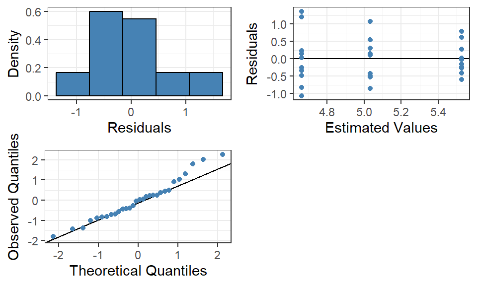

In the previous chapters we studied the relationship between a continuous response variable and one or more explanatory variables. Within multiple linear regression we allow the explanatory variables to be a mix of continuous and qualitative variables and can fit the regression model using indicator variables.
If a regression model solely contain qualitative explanatory variables, it is equivalent to compare means of different groups of those variables. This can be simplified into an Analysis of Variance, or ANOVA-model, which is often used in experimental studies. Within this family of models, we now call the explanatory variables factors and their different values levels.
Something to keep in mind when reading this chapter is that an ANOVA-model is just a simplified version of a regression model.
19.1 One-way ANOVA
An ANOVA-model containing only one factor is called a one-way ANOVA. We can formulate the model mathematically similar to that of a regression model: \[
\begin{aligned}
Y_{ij} = \beta_0 + \beta_1 \cdot X_{1j} + \dots + \beta_{A-1}\cdot X_{(A-1)j} + \varepsilon_{ij}
\end{aligned}
\tag{19.1}\]
where
\(j\) is the observation index for the \(j\):th observation in level \(i\) of the factor, ranging from 1 to \(n_i\), the number of observations in total within that level
\(A\) is the number of levels within the factor,
all \(X_{ij}\) are indicator coded variables that each indicate level \(i\) of the factor.
Note
The difference in an ANOVA-model compared to a standard regression model is the fact we now have two indexes, \(i\) and \(j\). We will encounter more ANOVA-models with more factors that increase this even further, but one thing to keep in mind is that the last index is considered the observation index within a specific combination of factor levels.
This model will in practice predict the same value for all observations of the same level because an indicator variable is the same value for all observations therein. We can simplify the predicted values as:
Some literature may use another variant of the model, called the cell means model.
\[
\begin{aligned}
Y_{ij} = \mu_i + \varepsilon_{ij}
\end{aligned}
\] where \(j\) is the observation index within each level, \(\mu_i\) is the mean for level \(i\) of the factor.
As mentioned multiple times but is worth repeating, an ANOVA-model is a special case of a regression model which means that the model assumptions \(\varepsilon_{ij} \overset{\mathrm{iid}}{\sim} N(0, \sigma^2)\) still apply and that the model should be evaluated using residual analysis before moving forward to statistical inference. One of the main differences with an ANOVA-model is that the residuals will be grouped to the different levels of the factor and that it can be a bit tough to assess if the homoscedasticity assumption hold.
19.1.1 Alternative to indicator coding
There exists many other ways to code our indicator variables that simplifies the mathematical calculations when fitting a model. One such way is using a factor effect coding system that has two main benefits; firstly it provides accurate parameter estimates in more complex ANOVA-models, secondly it changes the way we interpret an estimate for a specific level.
Indicator coded variables are interpreted as “the effect of this level compared to the chosen reference level” and the estimated parameters will numerically change based on the, most often arbitrarily, chosen reference level. Factor effect coding instead provides the same numerical parameter estimates regardless of the level that is “skipped” and is interpreted as “the effect of this level compared to the overall mean”.
We can define this new model in its regression form as: \[
\begin{aligned}
Y_{ij} = \mu + \beta_1 \cdot X_{1j} + \dots + \beta_{A-1}\cdot X_{(A-1)j} + \varepsilon_{ij}
\end{aligned}
\tag{19.2}\]
which is very similar to Equation 19.1 except that the intercept is now written as \(\mu\). Mathematically the differences are:
\(\mu\) is the unweighted overall mean of \(Y_{ij}\) calculated as: \[
\begin{aligned}
\mu &= \frac{\mu_1 + \mu_2 + \cdots + \mu_A}{A}
\end{aligned}
\]
\(\beta_i\) is the difference or effect of level \(i\) on the overall mean calculated as:
\(X_{ij}\) is factor effect coded as: \[
\begin{aligned}
X_{ij} =
\begin{cases}
1 \quad &\text{if level i}\\
-1 &\text{if level A}\\
0 &\text{otherwise}
\end{cases}
\end{aligned}
\] With the help of this coding we can show that the effect of level \(A\) can be calculated as the negative sum of the other parameters, even though that effect is not specifically defined in the model.
Some literature starts at this time to change the labels of the model parameters, for example the factor effect for level \(i\) is defined as \(\alpha_i\) instead. \[
\begin{aligned}
Y_{ij} = \mu + \sum_{i = 1}^{A-1}\alpha_i + \varepsilon_{ij}
\end{aligned}
\]
Throughout this book we will keep on using the regression formulation and define each instance of \(X_{ij}\) to clearly separate the models from one another.
19.2 The ANOVA-model
The tools of Chapter 14 allow us to compare two groups of data. But what do we do when we have more than two groups? As an example, we might wish to know how different treatments influence plant growth, as measured by dry weight. If there are two treatments, then there will be three (instead of two) groups, because the treatments will be compared with a control group which does not receive treatment.
Such a dataset is in fact built into R, and is called PlantGrowth:
The PlantGrowth data are in the form of a data frame instead of a tibble; hence we convert it above by using as_tibble.
We see that each group consists of ten observations, and we have three groups: the control (ctrl) treatment 1 (trt1), and treatment 2 (trt2). As usual, we visualize the data first, before doing any modeling or tests:
PlantGrowth |>ggplot(aes(x = group, y = weight)) +geom_boxplot(color ="steelblue", fill ="steelblue",alpha =0.2, outlier.shape =NA) +geom_jitter(alpha =0.4, width =0.05, color ="steelblue") +theme_bw()
There are two questions one can ask, and they naturally build on each other.
First, we might wonder if the observed differences between the distribution of the data in the different groups is meaningful. Could it be that all data points are actually drawn from the same underlying distribution, and the observed differences are simply due to chance? If so, what is the likelihood of that situation?
And second, provided we can reject the idea that the data in the different groups are identically distributed, which groups are the ones that differ from one another? For example, based on the figure above, it appears reasonable to expect a real difference between treatment 1 and treatment 2, but it is unclear whether the control truly differs from any of the treatments. What we will in practice be calculating is the difference in means between all three groups, whether they is any at all, and if so, which ones differ from each other.
Assuming we are using the factor effect coding, the model can be given as:
Before moving on the with model estimation we need to make sure that R reads the variable containing our factor of interest as a factor type. This can be seen in the tibble output where group is seen as a fct, a factor variable. In order to create the factor effect coding we make use of the function contr.sum(A) where A is the number of levels of the factor.
## Shows the factor effect coding matrixcontr.sum(3)
[,1] [,2]
1 1 0
2 0 1
3 -1 -1
## Shows the current/default coding matrix for the factorcontrasts(PlantGrowth$group)
trt1 trt2
ctrl 0 0
trt1 1 0
trt2 0 1
## Saves the factor effect coding matrix into the factorcontrasts(PlantGrowth$group) <-contr.sum(3)## Shows the new coding matrixcontrasts(PlantGrowth$group)
[,1] [,2]
ctrl 1 0
trt1 0 1
trt2 -1 -1
The default order in contr.sum is that the last level is considered the “missing” one, but we could reorder the factor levels (using factor(levels = new order) and/or relevel()) before adjusting the coding matrix to get any order we like.
Perhaps unsurprisingly, the function in R that estimates an ANOVA model is the same lm that we have used in Chapter 17 for performing linear regression:
model <-lm(weight ~ group, data = PlantGrowth) model |>summary()
Call:
lm(formula = weight ~ group, data = PlantGrowth)
Residuals:
Min 1Q Median 3Q Max
-1.0710 -0.4180 -0.0060 0.2627 1.3690
Coefficients:
Estimate Std. Error t value Pr(>|t|)
(Intercept) 5.0730 0.1138 44.573 <2e-16 ***
group1 -0.0410 0.1610 -0.255 0.8009
group2 -0.4120 0.1610 -2.560 0.0164 *
---
Signif. codes: 0 '***' 0.001 '**' 0.01 '*' 0.05 '.' 0.1 ' ' 1
Residual standard error: 0.6234 on 27 degrees of freedom
Multiple R-squared: 0.2641, Adjusted R-squared: 0.2096
F-statistic: 4.846 on 2 and 27 DF, p-value: 0.01591
The output takes some care to interpret correctly: out of the three coefficients listed, (Intercept) is the overall mean weight of all the plants; group1 is the difference of the mean weight in the control from the overall mean; and group2 is the difference of the mean weight in treatment 1 from the overall mean.
diagnosticPlots(model, alpha =1, bins =5)

Residual analysis of the PlantGrowth model
Given the fact that there are only 30 observations, the interpretation of these plots is going to be approximate. Unless there is clear indications of violations we usually assume that the assumptions are fulfilled. In this specific case, there are no clear indications that we are violating the normality assumption however there is an indication that the variance of the residuals are reduced for higher values of the weight.
At this point in the book we do not have any tools at our disposal to handle this so we will (unfortunately) disregard this observation and assume the residuals are homoscedastic (constant variance).
19.3 Statistical inference in an ANOVA model
Recall back to the two questions we asked ourselves in the exploratory phase; are the observed differences between the groups meaningful, and which groups differ from each other. Assuming that the residual analysis enforces that the model assumptions hold, these two questions can be answered by statistical inference.
To get more information, one can pass the result of lm to a function called anova. Despite its name, the role of this function is not to actually estimate the ANOVA model (that was done by lm), but to display its results using the sum-of-squares table, which is also known as the ANOVA table. In this table, each factor, as well as their interactions (if present), get one row each:
model |>anova()
Analysis of Variance Table
Response: weight
Df Sum Sq Mean Sq F value Pr(>F)
group 2 3.7663 1.8832 4.8461 0.01591 *
Residuals 27 10.4921 0.3886
---
Signif. codes: 0 '***' 0.001 '**' 0.01 '*' 0.05 '.' 0.1 ' ' 1
19.3.1 Overall F-test
An F-test can be used to determine whether a factor as a whole has a significant impact on the response variable, similar to that of the F-test in Section 17.4. Using the model Equation 19.2 we can write the hypotheses as:
\[
\begin{aligned}
H_0&: \beta_1 = \beta_2 = \dots = \beta_{A-1} = 0 \\
H_A&: \text{At least one of } \beta_i \text{ in } H_0 \ne 0
\end{aligned}
\]
The null hypothesis can be interpreted as no factor level mean differ from the overall mean if all model parameters are 0. In practice this means that the factor has no effect on the response variable. The alternative hypothesis indicate that at least one factor level mean differ from the overall mean, which in contrast results in the factor having an effect on the response variable.
Note
Since we can simplify the model to a mean for each factor level, the hypotheses are equivalent to: \[
\begin{aligned}
H_0&: \mu_1 = \mu_2 = \dots = \mu_{A-1} = \mu_A \\
H_A&: \text{At least two of } \mu_i \text{ in } H_0 \text{ differ}
\end{aligned}
\] This can be seen as an extension of the two sample t-test presented in Section 14.1.
This is where we are starting to see the reason for the name “Analysis of Variance”. Even though we are comparing means between groups, the complexity of actually comparing the means as we would in a two sample t-test would be all to complicated. We can instead make use of the sources of variation introduced in Section 17.4.1 that simplified for an ANOVA-model summarize the differences in means.
\(SSY\) is the total variation of the response variable written as the difference between each observation \(Y_{ij}\) and the total mean \(\overline{Y}\).
\(SSA\) is the explained variation of each of the factor level means written as the difference between the level mean \(\overline{Y}_{i}\) and the total mean \(\overline{Y}\).
\(SSE\) is the unexplained variation written as the difference between each observation \(Y_{ij}\) and the level mean \(\overline{Y}_{i}\).
If \(H_0\) was true the difference in factor level mean and overall mean would be 0, so \(SSA\) would be 0. On the other hand if \(H_A\) was true we would see a non-zero sum in \(SSA\). In order to assess whether the difference in means is large enough to not attribute it to chance, we define the test variable as:
\[
\begin{aligned}
F_{test} = \frac{SSA / df_A}{SSE / df_E} = \frac{MSA}{MSE}
\end{aligned}
\] where \(df_A\) and \(df_E\) are the degrees of freedom of the factor and error respectively. In the ANOVA table output we can see the result of this calculation in the F value column and its corresponding p-value in the Pr(>F) column.
Tip
Below is an interactive visualization using simulations of the relationship between the two sources of variation. The simulation assumes we have four groups with known population means1 we draw a sample from, visualize each group’s distribution and mean (black line) against the overall mean (red line), and finally calculate the sum of squares, the test variable and the p-value.
#| '!! shinylive warning !!': |
#| shinylive does not work in self-contained HTML documents.
#| Please set `embed-resources: false` in your metadata.
#| standalone: true
#| viewerHeight: 1000
require(shiny)
require(bslib)
require(ggplot2)
require(tidyr)
require(dplyr)
require(stringr)
require(munsell)
# Define UI for app that draws a histogram ----
ui <- page_sidebar(
sidebar = sidebar(open = "open",
sliderInput("group_1", "Population mean Group 1", min = -1, max = 1, value = 0, step = 0.1),
sliderInput("group_2", "Population mean Group 2", min = -1, max = 1, value = 0, step = 0.1),
sliderInput("group_3", "Population mean Group 3", min = -1, max = 1, value = 0, step = 0.1),
sliderInput("group_4", "Population mean Group 4", min = -1, max = 1, value = 0, step = 0.1),
numericInput("sample_size", "Sample size", value = 30, min = 1, step = 1),
actionButton("new_sample", "Draw a new sample"),
uiOutput("variances"),
),
plotOutput("plot", height = "600px", width = "60%")
)
server <- function(input, output, session) {
data_input <- reactive({
means <- c(input$group_1, input$group_2, input$group_3, input$group_4)
seed <- input$new_sample
set.seed(seed = seed)
samples <- sapply(means, FUN = function(x) {
rnorm(n = input$sample_size, mean = x, sd = 1)
}) %>%
as.data.frame()
data_samples <- pivot_longer(samples, cols = everything()) %>%
mutate(
name = str_replace(name, "V", "Group ")
)
})
output$plot <- renderPlot({
data_samples <- data_input()
sample_means <- aggregate(value ~ name, data_samples, mean)
ggplot2::ggplot(data = data_samples) + aes(x = value) +
geom_histogram(binwidth = 0.25, color = "black", fill = "steelblue") +
geom_vline(data = sample_means, aes(xintercept = value), linetype = 2, linewidth = 1.2) +
geom_vline(aes(xintercept = mean(value)), color = "#d9230f", linewidth = 1) +
scale_x_continuous(breaks = seq(-20, 20, by = 1)) +
facet_grid(rows = vars(name)) + theme_bw() +
theme(strip.text.y = element_text(angle = 0, color = "white", size = 14),
strip.background.y = element_rect(fill = "black"),
axis.title.y = element_blank()) +
labs(x = "Y")
})
output$variances <- renderUI({
data_samples <- data_input()
sample_means <- aggregate(value ~ name, data_samples, mean)
sample_sizes <- aggregate(value ~ name, data_samples, length)
SSY <- sum((data_samples$value - mean(data_samples$value))^2)
SSR <- sum(sample_sizes$value * (sample_means$value - mean(data_samples$value))^2)
MSR <- SSR/(nrow(sample_means) - 1)
SSE <- SSY-SSR
MSE <- SSE/(nrow(data_samples) - nrow(sample_means))
pvalue <- pf(
round(MSR / MSE, 3),
df1 = (nrow(sample_means) - 1),
df2 = (nrow(data_samples) - nrow(sample_means)),
lower.tail = FALSE
)
withMathJax(
paste("$$SSY = ", round(SSY, 3), "\\\\",
"SSA = ", round(SSR, 3), "\\\\",
"SSE = ", round(SSE, 3), "\\\\",
"F_{test} = ", round(MSR / MSE, 3), "\\\\",
"\\text{p-value} = ", pvalue %>% round(3), "$$")
)
})
}
# Create Shiny app ----
shinyApp(ui = ui, server = server)
Initially the population means of the four groups are set at the same level and the sample drawn show factor level means very close to the overall mean and each other. If we adjust one (or more) of the population means to something else, we directly see the impact on the drawn sample. The factor level mean is now further away than the overall mean as well as the other level means. By this logic we can see that a change in at least one mean also changes the relation between the explained and unexplained variation.
In our model, the p-value of the overall F-test is \(0.01591\) which is lower than a significance level of 5%. This means that we can conclude that the observed differences are significant and we expect at least two of the three population means to differ from one another.
19.3.2 Multiple comparisons
If \(H_0\) is rejected, we do not yet know which factor levels differ from each other just that at least two does. One could look at this problem as doing multiple pairwise t-tests between each pair of factor levels but this causes two main issues if we want to draw conclusions from all tests at once.
First the method of using repeated t-tests works fine in our example, there are some problems with this approach. One is that it can quickly get out of hand, because having \(n\) groups means there will be \(n (n - 1) / 2\) pairs to consider. For instance, if the number of groups is 12 (not a particularly large number), then there are 66 unique pairs already. It would not be pleasant to perform this many tests, even if any single test is quite simple to run.
The second relates to the risk of making the wrong decision. Recall the Type I and II errors discussed in Section 12.2.1.3. Using a 5% level of significance, we have a 5% chance of our sample being one of the infinite amount of samples that rejects this specific \(H_0\) even though it is true. In practice this means that we risk having observed differences that occur purely by chance. Very simply put, the problem is that if sufficiently many groups are compared, then we might find at least one pair with a low p-value—not because the null hypothesis is false, but because across a large number of observations some p-values will turn out lower than others just by chance. The p-values measure, in effect, the probability that the observed differences are too stark to be due to simple coincidence. But if we create sufficiently many opportunities for such a coincidence to arise, then of course one eventually will. One of the best explanations of this point is in the following cartoon by xkcd:
Fortunately, there is a way of solving both the problem of automating many pairwise comparisons, as well as adjusting the p-values to account for multiple testing. The way forward is to perform a post hoc (Latin “after this”) test.
19.3.2.1 Tukey family confidence
The Tukey(-Kramer) method is used to adjust the p-values of all pairwise comparisions of factor level means. We will make use of the package emmeans and its different functions to first create a table of the estimated means and their corresponding standard errors and then the pairwise comparisons with the Tukey post-hoc adjustment.
require(emmeans)## Calculates the factor level means of the specified factorfactorMeans <-emmeans(model, specs =~ group)## Calculates the pairwise comparisons with a Tukey adjustmenttukey <-pairs(factorMeans, adjust ="tukey") ## Presents the pairwise comparisons sorted by the estimated differencetukey |>as_tibble() |>arrange(abs(estimate) |>desc() )
The table shows three contrasts, which is the three pairwise comparisons between each factor level and the adjusted p-values of each comparison. The hypotheses tested are:
What has the post hoc Tukey test revealed? Precisely what we have been suspecting: that the only difference worth noting is the one between the two treatments (first row of the table, where the adjusted p-value is sufficiently small to have a chance of pointing at a real difference).
19.3.2.2 Dunnett’s test against control
Considering we have a control group, there exist a specific test that looks at all pairwise comparisons of factor levels only against the control group. This is called a Dunnett’s test.
Changing the method argument to dunnett and specifying which factor level contains the control group in ref we now focus on the two comparisons against the control.
It shows that neither treatment has significant differences against the control on a 5% significance level.
19.4 The Kruskal–Wallis and Dunn tests
What happens if the regression model assumptions are not fulfilled? Starting with the first of these questions, there exists an analogue to the Wilcoxon rank sum test which works when there are more than two groups of data. This is the Kruskal–Wallis test2 , which can be used with any number of groups as long as those groups vary within a single factor.3
The Kruskal–Wallis test is non-parametric, and therefore does not rely on assumptions such as the normality of the residuals. Its implementation in R, kruskal.test, is analogous to wilcox.test, t.testlm, or mblm: it takes a formula and the data as inputs. Therefore, to perform the test on the PlantGrowth data, we write:
kruskal.test(weight ~ group, data = PlantGrowth)
Kruskal-Wallis rank sum test
data: weight by group
Kruskal-Wallis chi-squared = 7.9882, df = 2, p-value = 0.01842
The null hypothesis of the Kruskal–Wallis test is that the observations from all groups were sampled from the same underlying distribution—that is, that there are no differences between the groups other than those attributed to random noise. Consequently, when the p-value is low (like above), this means that it is unlikely that the data in all groups come from the same distribution, and thus that at least one group differs from the others.
The p-value above, in the row belonging to the factor group, under the column Pr(>F), is the analogue of the p-value calculated by the F-test (which was 0.01591). We can see that the two tests agree qualitatively.
In this case, the Dunn test is the non-parametric post hoc test we want to use to determine which group(s) differ. This test is implemented in R, but not in any of the basic packages. To use it, one must first install the FSA package:
install.packages("FSA")
Once it is installed, the package should be loaded:
require(FSA)
And then, the Dunn test (dunnTest) follows the familiar syntax of receiving a formula and the data:
The table above is the output of the test, and has four columns. The first column shows which two groups are being compared. The next column, called Z, is the value of the test statistic, which we need not concern ourselves with here. Next, we have the unadjusted p-values; and finally, the adjusted p-values (P.adj), which have been corrected to account for the multiple testing problem mentioned above. Therefore, the adjusted p-values will always be as large or larger than the unadjusted ones.
What has the post hoc Dunn test revealed? Precisely what we have been suspecting: that the only difference worth noting is the one between the two treatments (last row of the table, where the adjusted p-value is sufficiently small to have a chance of pointing at a real difference).
In this case, the results from the Dunn test and the Tukey test are in agreement: only the difference between the two treatment groups stands out as having a reasonable chance of being real.
19.5 Exercises
The file daphnia_growth.csv contains data on the growth rate of Daphnia populations that are infected with various parasites. There are four groups of observations: the control (no parasites), infection with Metschnikowia bicuspidata, infection with Pansporella perplexa, and finally, infection with Pasteuria ramosa. Each group has ten replicate observations. Are growth rates affected by parasite load?
Before doing any tests, visualize and explore the data, and make sure you have a solid expectation for the results of any statistical analysis.
Answer the question whether growth rates affected by parasite load by first applying a non-parametric test (and a subsequent non-parametric post-hoc test if needed).
Next, apply a parametric test in the same way: by applying the test and running post-hoc tests if needed.
Do not forget to create diagnostic plots, to see if the assumptions behind the parametric test are satisfied to an acceptable degree. Is that the case? And do the results from the parametric and non-parametric tests agree with one another?
In ponds.csv, measured acidity data (pH) is reported from four different ponds. Do the ponds differ in acidity, and if so, which ones from which others? Answer using both non-parametric and parametric tests, with appropriate post-hoc analyses. Check whether these different methods of analysis agree, and make sure that the assumptions behind the parametric test are satisfied using diagnostic plots. (Note: in this dataset, some values are missing.)
Each group is actually \(N(\mu_i, \sigma^2 = 1)\).↩︎
The Kruskal–Wallis test is sometimes referred to as “non-parametric ANOVA”. While this is perfectly fine as a label, one should be aware that it is, strictly speaking, a misnomer: the Kruskal–Wallis test does not rely on computing variances at all.↩︎
In Chapter 20 we will see examples where multiple independent factors are varied, and each possible combination results in a separate group. For example, if the effects of three different dosages of vitamin C are examined on the tooth growth of Guinea pigs, and the vitamin is also supplied in two distinct forms of either orange juice or raw ascorbic acid, then there will be \(3 \cdot 2 = 6\) groups, defined by the two factors of dosage and form of supplement.↩︎